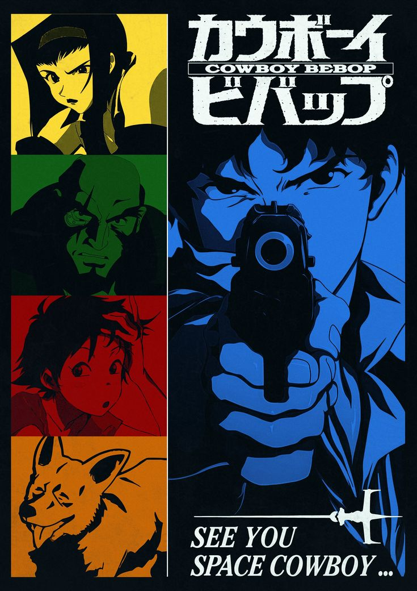
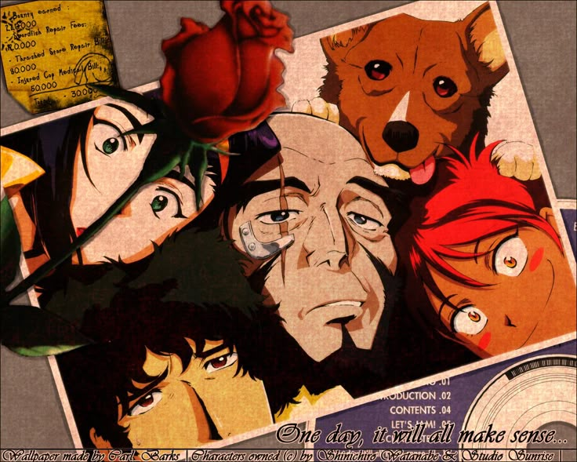

Plot of Cowboy Bebop!
Airing in 2001, directed by Yoshiyuki Take and Shin'ichirô Watanabe, Cowboy Bebop: The Movie - Knockin' on Heaven's Door,
takes place in 2071 on Mars. Following bounty hunters, Spike Spiegel, Faye Valentine, Jet Black, and Edward, trying to
complete the bounty of finding the guy trying to spread a virus turns into something way bigger.
Finding out that Vincent Volaju is the one behind this, after he was a test subject for the same virus, is trying to
do this to figure something out about his past. Both Spike, and Cherious Medical worker Elektra Ovirowa, realize that
they both know Volaju, as Elektra is sent out to find Vincent to stop the public from knowing about him.
With Spike trying to capture him for the bounty, and Elektra trying to get him to remember her and capture him for
her job, they team up together to figure out where the virus will be spread, how it's going to be spread, and how to stop
it. Faye, Jet, and Ed eventually get added along to the plan. With Faye finding people working with Vincent, Jet helping
get the antidote of the virus, and Ed hacking to find more information on Cherious Medical and Vincent, they help stop
the virus from being spread at the Halloween party on Mars.
Along the way, they discover how the medical company is trying to cover up and how the lines of dream and reality
are blurred when it comes to sanity. Leaving you with a question to ponder,
"Are you living in reality?"

this is the pill shape
My Opinion on Cowboy Bebop!
Although the movie has many mixed reviews, I personally love it. With sci-fi and drama, it offers a new perspective on
life. It shows at the end of the movie as it says, “Are you living in the real world?” Throughout the movie, Vincent
is shown never remembering anything from his past because of the bioweapon, leading him to try and infect everyone
as well. While others see this as insane, he doesn't. He has no past, no future, no nothing. Ultimately he has nothing
to lose. But he's not the only one with nothing to lose. The bounty hunters, Spike, Jet, Faye, and Ed, also have nothing
to lose. Yet that's my favorite thing about the film. Albeit, they have nothing, they have this “dull hope" to them.
They are realistic in what they do yet continue with life, waiting for the best to come. Even if it means going through
many twists and turns.
Not only, when it comes to the story does Cowboy Bebop have promises, the art and music make it feel even more
surreal. With the music of the movie ranging from many different genres, each song played at each moment fits it
perfectly. Elevating the mood to make it feel like you are really there whilst everything is happening. The composers
of the song really had a blast making the music and you can tell. Its the passion of doing it that is shown through the
compositions.
The art style also helps capture that “dull hope” feeling the characters encapsulate. With certain things and
characters being brightly colored, to show their hopefulness and naiveness, and others having duller colors to show their
hopelessness and maturity, the movie encapsulates the many different perspectives of the characters just with the art. With
critic Tim Brayton saying, “Taken on its own terms, this is a very impressive piece of animation and sci-fi worldbuilding,
telling its gloomy story of a man-made end-times through some wonderfully expressive visuals and increasingly heavy atmosphere.”
(July 5, 2023, metacritic).

this is the rounded-rectangle "card"